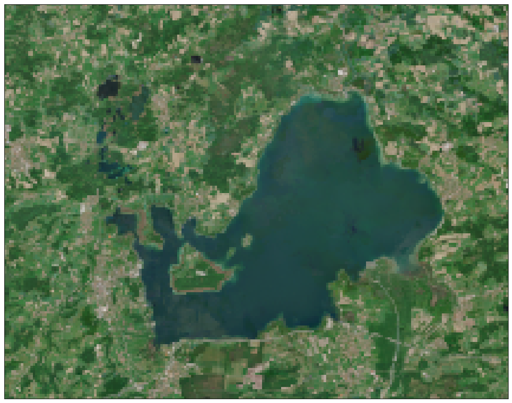

# Utilities
import matplotlib.pyplot as plt
import pandas as pd
import getpass
from sentinelhub import (
SHConfig,
DataCollection,
SentinelHubCatalog,
SentinelHubRequest,
SentinelHubStatistical,
BBox,
bbox_to_dimensions,
CRS,
MimeType,
Geometry,
)
from utils import plot_imageHow to access Sentinel-2 Level 3 Cloudless Quarterly Mosaics using the Process API
For more details on the individual steps in this notebook, compare with the “Introduction to Sentinel Hub API-s” notebook here: First we import dependencies:
Credentials
Credentials for Sentinel Hub services (client_id & client_secret) can be obtained in your Dashboard. In the User Settings you can create a new OAuth Client to generate these credentials. For more detailed instructions, visit the relevant documentation page.
If you are a first time user of the Sentinel Hub Python package for Copernicus Data Space Ecosystem, you should create a profile specific to the Copernicus Data Space Ecosystem. You can do this in the following cell:
# Only run this cell if you have not created a configuration.
config = SHConfig()
# config.sh_client_id = getpass.getpass("Enter your SentinelHub client id")
# config.sh_client_secret = getpass.getpass("Enter your SentinelHub client secret")
config.sh_token_url = "https://identity.dataspace.copernicus.eu/auth/realms/CDSE/protocol/openid-connect/token"
config.sh_base_url = "https://sh.dataspace.copernicus.eu"
# config.save("cdse")However, if you have already configured a profile in Sentinel Hub Python for the Copernicus Data Space Ecosystem, then you can run the below cell entering the profile name as a string replacing profile_name.
# config = SHConfig("profile_name")Setting an area of interest
The bounding box in WGS84 coordinate system is [(longitude and latitude coordinates of lower left and upper right corners)]. You can get the bbox for a different area at the bboxfinder website.
All requests require a bounding box to be given as an instance of sentinelhub.geometry.BBox with corresponding Coordinate Reference System (sentinelhub.constants.CRS). In our case it is in WGS84 and we can use the predefined WGS84 coordinate reference system from sentinelhub.constants.CRS.
aoi_coords_wgs84 = [12.292349, 47.810849, 12.569037, 47.967123]When the bounding box bounds have been defined, you can initialize the BBox of the area of interest. Using the bbox_to_dimensions utility function, you can provide the desired resolution parameter of the image in meters and obtain the output image shape. For a Process API request, the limit is 2500*2500 pixels, if the output below has larger values, you have to limit the bouding box or reduce the resolution.
resolution = 100
aoi_bbox = BBox(bbox=aoi_coords_wgs84, crs=CRS.WGS84)
aoi_size = bbox_to_dimensions(aoi_bbox, resolution=resolution)
print(f"Image shape at {resolution} m resolution: {aoi_size} pixels")Image shape at 100 m resolution: (213, 167) pixelsProcess API request for Cloudless mosaics as a BYOC
Example 1: True Color Image
We build the request according to the API Reference, using the SentinelHubRequest class. Each Process API request also needs an evalscript.
The information that we specify in the SentinelHubRequest object is: - an evalscript, - a list of input data collections with time interval, - a format of the response, - a bounding box and its size (size or resolution). .
The evalscript in the example is used to select the appropriate bands. We return the RGB (B04, B03, B02) Sentinel-2 L2A bands with some contrast enhancement.
- Here the data collection is defined as a BYOC (Bring Your own COG). The collection ID for this collection can be found here:
S2l3_cloudless_mosaic = DataCollection.define_byoc(
collection_id="5460de54-082e-473a-b6ea-d5cbe3c17cca"
)Then, we define the evalscript. The evalscript can be copied directly from the browser, eg. this scene (click on the </> icon for the selected layer): It is different from the generic true color evalscript for a single Sentinel-2 image, since it has to take care of contrast enhancement to provide a visually pleasing image for a large area.
evalscript_true_color = """
//VERSION=3
function setup() {
return {
input: ["B04","B03","B02", "dataMask"],
output: { bands: 4 }
};
}
// Contrast enhance / highlight compress
const maxR = 3.0; // max reflectance
const midR = 0.13;
const sat = 1.2;
const gamma = 1.8;
const scalefac = 10000;
function evaluatePixel(smp) {
const rgbLin = satEnh(sAdj(smp.B04/scalefac), sAdj(smp.B03/scalefac), sAdj(smp.B02/scalefac));
return [sRGB(rgbLin[0]), sRGB(rgbLin[1]), sRGB(rgbLin[2]), smp.dataMask];
}
function sAdj(a) {
return adjGamma(adj(a, midR, 1, maxR));
}
const gOff = 0.01;
const gOffPow = Math.pow(gOff, gamma);
const gOffRange = Math.pow(1 + gOff, gamma) - gOffPow;
function adjGamma(b) {
return (Math.pow((b + gOff), gamma) - gOffPow)/gOffRange;
}
// Saturation enhancement
function satEnh(r, g, b) {
const avgS = (r + g + b) / 3.0 * (1 - sat);
return [clip(avgS + r * sat), clip(avgS + g * sat), clip(avgS + b * sat)];
}
function clip(s) {
return s < 0 ? 0 : s > 1 ? 1 : s;
}
//contrast enhancement with highlight compression
function adj(a, tx, ty, maxC) {
var ar = clip(a / maxC, 0, 1);
return ar * (ar * (tx/maxC + ty -1) - ty) / (ar * (2 * tx/maxC - 1) - tx/maxC);
}
const sRGB = (c) => c <= 0.0031308 ? (12.92 * c) : (1.055 * Math.pow(c, 0.41666666666) - 0.055);"""Now we run the Process API Request. We set - the evalscript to the script we defined in the cell above, - the input data - collection to the cloudless mosaic BYOC collection we defined in the previous cell, - the time of interest directly in the request parameter - responses of the script - the bounding box and AOI size as defined above - and finally the credentials as defined in the config (the second cell) - optionally, you can also give a location to save data by mentioning the path (data_folder='./data')
request_true_color = SentinelHubRequest(
evalscript=evalscript_true_color,
input_data=[
SentinelHubRequest.input_data(
data_collection=S2l3_cloudless_mosaic,
time_interval=("2023-04-01", "2023-04-02"),
)
],
responses=[SentinelHubRequest.output_response("default", MimeType.PNG)],
bbox=aoi_bbox,
size=aoi_size,
config=config,
data_folder="./data",
)The method get_data() will always return a list of length 1 with the available image from the requested time interval in the form of numpy arrays.If you want to save the data, make sure to set save_data=True
true_color_imgs = request_true_color.get_data(save_data=True)print(
f"Returned data is of type = {type(true_color_imgs)} and length {len(true_color_imgs)}."
)
print(
f"Single element in the list is of type {type(true_color_imgs[-1])} and has shape {true_color_imgs[-1].shape}"
)Returned data is of type = <class 'list'> and length 1.
Single element in the list is of type <class 'numpy.ndarray'> and has shape (167, 213, 4)Now we call the plot function to print the image that we defined above.
image = true_color_imgs[0]
print(f"Image type: {image.dtype}")
# plot function
# factor 1/255 to scale between 0-1
# factor 1 to keep brightness scaling that was already handled in the evalscript
plot_image(image, factor=1 / 255, clip_range=(0, 1))Image type: uint8
Summary
So what have we learnt in this notebook?
- How to modify a Process API request to access a BYOC dataset such as Sentinel-2 Level3 Cloud Free Mosaics.
- Visualising the derived image in a simple way